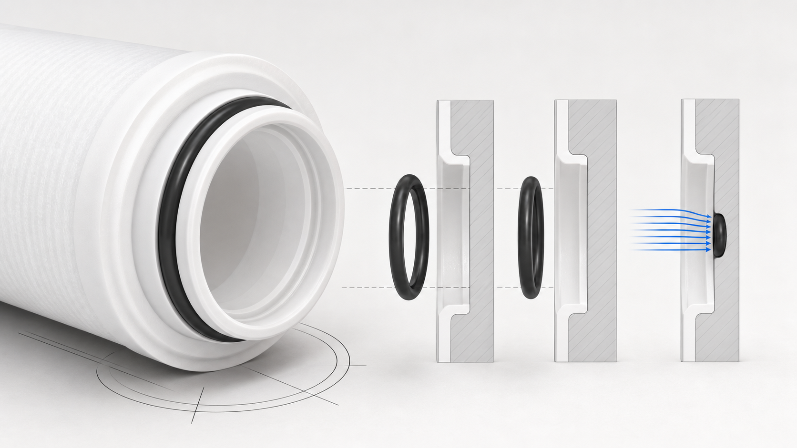

Bộ lọc PP thổi nóng chảy có vòng đệm O-ring bằng silicone
PP · chỉ các thông tin thực tế đã được chấp nhậnURL cố định này hiện sử dụng thuật ngữ vật liệu chính xác: gioăng O-ring silicone. Gioăng O-ring là bộ phận làm kín; phải xác nhận vật liệu, kích thước, đầu chuyển của lõi lọc và kiểu kết nối với vỏ lọc trước khi báo giá.

Thông tin kỹ thuật đã được xác minh
Các tùy chọn được liệt kê trong nguồn phải được đối chiếu và xác nhận theo báo giá và bản vẽ sản xuất.
Cấu hình
- Vòng đệm O-ring bằng silicone
- Xác nhận chiều dài lõi lọc, đường kính ngoài và đường kính trong, cấp lọc micron, cấu hình đầu lõi, vật liệu làm kín và độ tương thích với vỏ lọc trước khi báo giá.
- Cấu hình
- Các tùy chọn được liệt kê trong nguồn phải được đối chiếu và xác nhận theo báo giá và bản vẽ sản xuất.
Cách lựa chọn
- Gửi thông tin về ứng dụng, tình trạng nước cấp và công đoạn kiểm soát cặn cần thiết.
- Xác nhận chiều dài lõi lọc, đường kính ngoài (OD), đường kính trong (ID), cấp lọc micron, cấu hình đầu lõi và vật liệu làm kín.
- Xác nhận kiểu kết nối với vỏ lọc, số lượng, quy cách đóng gói và các tài liệu cần có.
Cách lựa chọn
Bộ phận làm kín được gọi là vòng silicon hay gioăng O-ring silicone?
Thuật ngữ vật liệu chính xác trên trang này là gioăng O-ring silicone. Vẫn phải xác nhận kích thước gioăng, đầu chuyển và kiểu kết nối với vỏ lọc cho dự án.
Người mua cần xác nhận những gì đối với lõi lọc PP thổi nóng chảy có gioăng O-ring silicone?
Xác nhận chiều dài lõi lọc, đường kính ngoài và đường kính trong, cấp lọc micron, cấu hình đầu lõi, vật liệu làm kín và độ tương thích với vỏ lọc trước khi báo giá.
Yêu cầu báo giá kỹ thuật: Lõi lọc PP thổi nóng chảy có gioăng O-ring silicone
Xác nhận chiều dài lõi lọc, đường kính ngoài và đường kính trong, cấp lọc micron, cấu hình đầu lõi, vật liệu làm kín và độ tương thích với vỏ lọc trước khi báo giá.